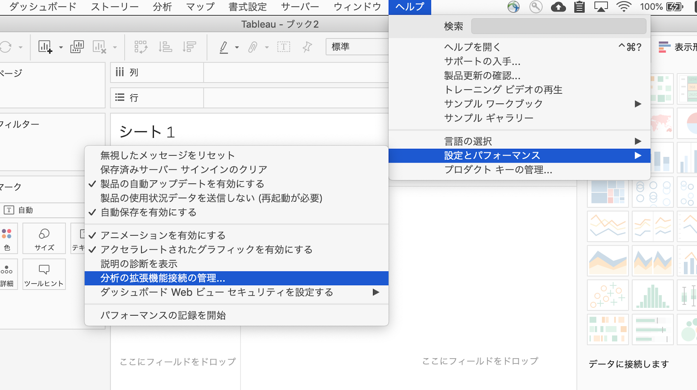

Last Updated: 2021-07-03
Overview
Tableau はダッシュボードやレポート上で各種計算を行います。同製品と連携可能な Analytics Extensions を使うことで動的に外部サービスを使った演算処理も行えます。Analytic Extensions は Tableau からリアルタイムに受け取ったデータを外部サービスと連携させ各種変換処理等を行わせます。Tableau はこの戻りデータをダッシュボードやレポートへ反映させます。
通常この Analytics Extensions は Node.js や Python 等のカスタムコードで組み上げられますが、MuleSoft を使うことでより迅速に幾多もの外部サービスとの連携が可能となります。MuleSoft で Analytics Extension を開発を短期間で開発して、MuleSoft の Application Network に Tableau を組み入れます。これにより、MuleSoft が提供する各種コネクタを使って Salesforce, SAP, ServiceNow をはじめとする各種データソースと Tableau を容易に連携できるようになります。

What you'll build
本 CodeLab においては、Tableau の Analytics Extension として稼働する MuleSoft API を弊社が提供するテンプレートから作成します。今回は通貨換算を行うテンプレートと利用します。
What you'll learn
- MuleSoft を使った Tableau Analytics Extension 実装
What you'll need
- Anypoint Studio 7.7.0 or later
- Mule Runtime Engine 4.3.0 or later
- Tableau Analytics Extension Template
- Tableau Desktop(14 日間のトライアル版あり)
テンプレートのダウンロード
GitHub レポジトリページにアクセスします。
Code > Download ZIP を選択し、Zip ファイルとしてローカルへダウンロードします。

ダウンロードした Zip ファイルを解凍します。
テンプレートを Anypoint Studio へ取り込み
Anypoint Studio を起動します。
File メニューから Import を選択します。

Anypoit Studio from File System を選択の上、Next ボタンを押下します。

Project Root 欄にて先の手順で解凍したフォルダを選択します。
Finish ボタンを押下します。

ダウンロードしたテンプレートから Mule Project が生成され、tableau-analytics-extensions-api.xml が自動で開かれます。（開かれない場合は Package Explorer から選択の上、開いてください。）

はじめに
本メソッドは Analytics Extension が実装された Server に関する情報をレスポンスとして返します。
レスポンスデータの設定
Get:\info:tableau-analytics-extensions-api-config flow の位置までスクロールします。

Transform Message コンポーネントを選択します。
レスポンスデータを確認します。実運用においては、 state_path を attributes.header.host 等、実際のデータに置き換えて利用します。
本ハンズオンではテンプレートで構成されたデータをそのまま利用します。

はじめに
本メソッドでは Tableau より渡される引数を元に Analytics Extension が実際に行う適切な処理を実装します。引数は HTTP Body の data として渡されます。実際に行う処理は HTTP body の script で渡される内容で切り替えます。
本ハンズオンでは、script に「currency」が指定された場合に、3rd Party API を利用した通貨換算処理を MuleSoft に実装します。
もし MuleSoft を使わない場合、例えば Node.js であれば下記のようなコード実装が最低限必要となります。（）しかしここでは、コード記述は最小化し、可読性が高く尚且つ属人性を排除するローコードベースの開発を行います。
// -------------------- CURRENCY CONVERSION --------------------
exports.convert = async (data, callback) => {
let from = data._arg2[0];
let to = data._arg3[0];
let url = `https://openexchangerates.org/api/latest.json?symbols=${from},${to}&app_id=${process.env.CURRENCY_KEY}`;
// Get the exchange rate and convert
const response = await fetch(url);
const body = await response.json();
if (body.error) return callback([0], null);
let rate = body.rates[to] / body.rates[from];
let output = data._arg1.map(money => money * rate);
callback(null, output);
};実装する処理の確認
本ハンズオンでは下表のかたちでリクエストを受け取り、通貨換算結果を返す Tableau Analytics Extension を実装します。
Script | 「currency」を固定値で指定 | |
Data | _arg1 | 通貨換算対象の金額を指定 |
_arg2 | 通貨換算前の通貨を指定(3 文字の通貨コード、例 USD) | |
_arg3 | 通貨換算後の通貨を指定(3 文字の通貨コード、例 JPY) | |
リクエストの例：
POST /evaluate HTTP/1.1
Host: localhost:8081
Authorization: Basic dGVzdDp0ZXN0
Accept: */*
Accept-Encoding: gzip, deflate
User-Agent: Tableau Desktop 20201.20.0721.1350; pro; libcurl-client; 64-bit; en_US; Mac OS X 10.15.7;
TabPy-Client: Tableau Desktop Pro2020.1
Content-Type: application/json
Connection: Keep-Alive
Content-Length: 80
{"script":"currency","data":{"_arg1":[56756.0],"_arg2":["GBP"],"_arg3":["USD"]}}レスポンスの例：
HTTP/1.1 200 OK
Content-Type: application/json; charset=UTF-8
Content-Length: 41
Date: Thu, 14 Jan 2021 17:54:31 GMT
[
77694.09149274612391958450717721687
]Dummy /eval の実装
Tableau 側の既知の問題として dummy の POST /eval の実装を必要としています。本 Dummy Call においては下記がリクエストとしと渡されます。
{‘script': ‘return int(1)', ‘data': {‘_arg1': [4]}}この際、実装側は「1」を戻します。
Post:\evaluate:application\json:tableau-analytics-extensions-api-config flow までスクロールします。
Choice ルーターの最初の条件式を確認し、「returun int(1)」が script に指定された場合に、中の処理が評価されることを確認します。

この中にある Transform Message を確認し、「1」が戻されるよう構成されていることを確認します。

通貨換算処理の実装
次の条件式を確認します。
ここでは、script に「currency」が指定された場合に中の処理が評価されます。
つまり上記で定義したリクエストがきた場合の通貨換算の処理はここで実装します。

通貨換算は、Open Exchange Rates という外部サービスを利用し最新の変換レートを使って計算します。
Request を選択し、Mule Property Window を開きます。
本コンポーネントにて Open Exchange Rates の GET /latest.json メソッドを呼び出し、最新の通貨レートを取得します。
Query Parameters タブを選択します。
本メソッドでは symbols クエリパラメータで渡された通貨の最新レートを返します。また、本 API を利用するための ID も app_id クエリパラメータで渡します。ここでは、src/main/resources 配下の構成ファイル（config.dev.yaml）に指定された currency/app_id を利用します。（app_id は次ステップで取得します。）

Transform Message コンポーネントを選択します。
本コンポーネントにて、Open Exchange Rates より戻された結果をもとに通貨換算演算を行います。

Open Exchange Rate の App ID を取得
Open Exchange Rate API の利用で求められる App ID を取得します。
https://openexchangerates.org/signup/free にアクセスし、必要事項を入力の上 Open Exchange Rates の Free Plan に Sign Up します。

Sign Up ができましたら、App IDs ページを開き、App ID をコピーします。

App ID を構成ファイルに設定
Anypoint Studio に戻り、Package Explorer にて src/main/resources フォルダを開きます。
同フォルダ配下にある config.dev.yaml を開きます。
app_id エントリを先の手順でコピーした Open Exchange Rates の APP ID に置き換えます。

Mule API をテスト実行
tableau-analytics-extensions-api タブをクリックします。
右クリックから Run project tableau-analytics-extensions-api を選択します。

Console タブに Deployed が表示されることを確認します。

ブラウザを開き http://localhost:8081/api/console へアクセスします。
POST ボタンを押下します。

Body 欄の中身を確認します。
ここでは、API 仕様に定義された例値が自動でセットされています。
本例では、12.99 USD を CAD に変換します。

スクロールダウンして、Send ボタンを押下します。

結果が返ってくることを確認します。（結果は実行時のレートに依存するため下図と同じにはなりません。）

必要に応じて別のバリエーションでもテストしてみます。
下図の例では 10 USD を日本円に換算しています。

Tableau Analytic Extension の構成
Tableau Desktop を起動します。
ファイル > 新規 を選択し、新規のワークブックを作成します。

ヘルプ > 設定とパフォーマンス > 分析の拡張機能接続の管理... を選択します。

下記項目を設定の上、テスト接続ボタンを押下します。
分析の拡張機能の選択 | TabPy/External API |
サーバー | localhost |
ポート | 8081 |
ユーザ名 | test |
パスワード | test |

構成に問題がない場合は、下図のようなウィンドウが返ってきます。

OK ボタンを押下します。
サンプルデータを Tableau に登録
下記コードをコピーし、任意の名前で保存します。(例：sampleTableau.json）
{
"test":[
{"Currency": "THB",
"Balance": 100},
{"Currency": "USD",
"Balance": 100},
{"Currency": "EUR",
"Balance": 100}
]
}データに接続をクリックします。

JSON ファイルをクリックします。

上記で作成したファイルを選択します。
全てチェックの上、OK ボタンを押下します。

Tableau Analytic Extension を計算フィールドに構成
メジャーネーム欄にて右クリックから計算フィールドの作成... を選択します。

Currency Calc と命名し、下記コードを入力の上、OK ボタンを押下します。
SCRIPT_REAL("currency",ATTR([Balance]),ATTR([Currency]),"JPY" )
Tableau Analytic Extension をワークシートに反映
行欄に Currency, Balance, Currency Calc をドラッグランドドロップします。
その後、表を選択することで下図のようにサンプルにリストしたパターンで API が呼ばれ、各通貨に応じた換算を行います。


本 CodeLab ハンズオンにおいては、Tableau Analytics Extension を MuleSoft API で実装する方法を体験しました。
本例では、3rd Party API を使った API を開発しましたが、Tableau が直接アクセスできないデータソースや、特殊な加工が必要なデータがあれば、MuleSoft を介在させて補助することができます。また、条件ごとに利用するデータソースが異なるといったシナリオにも対応ができます。
これらの API は Tableau のために全て新規開発するのではなく、他目的で既に MuleSoft API が運用されていればそれらの活用も検討します。
What's next?
Check out some of these codelabs...
- TBD